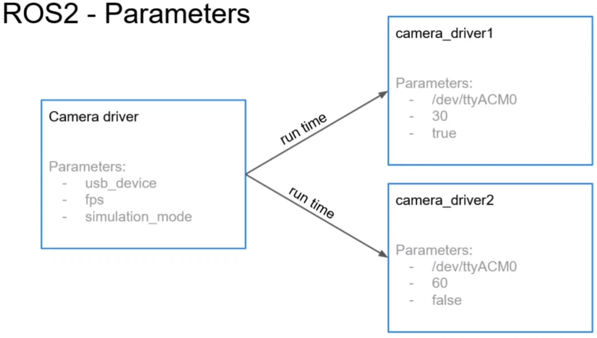
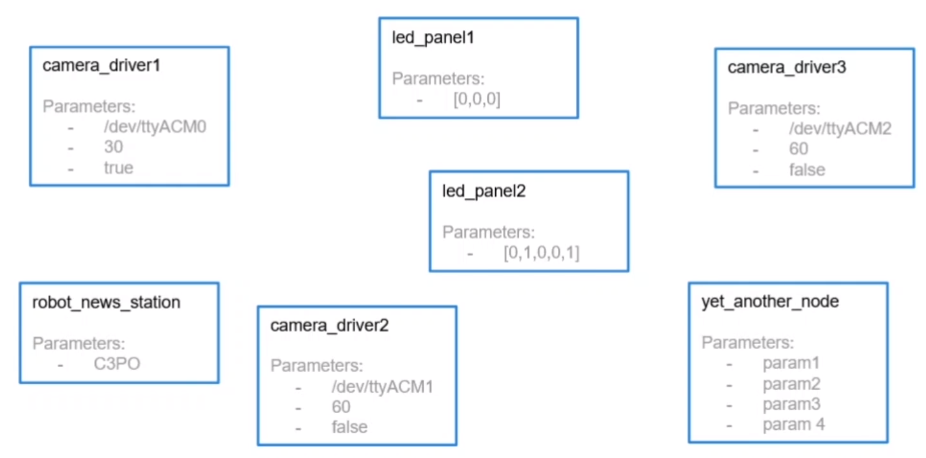
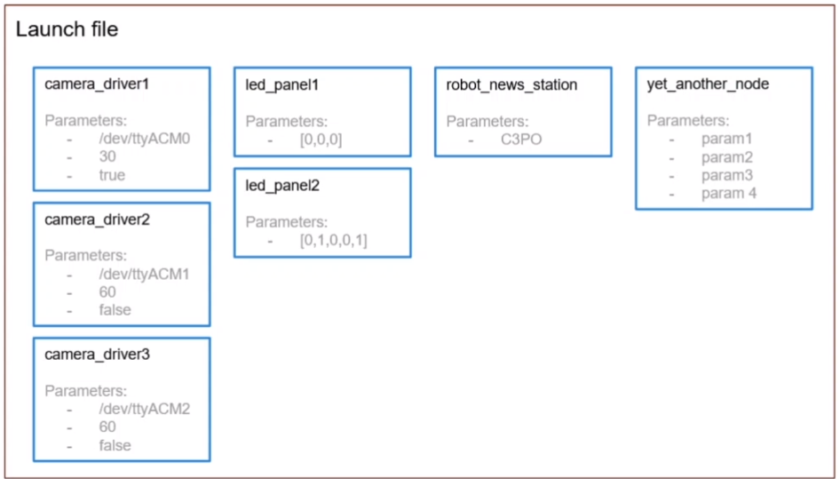
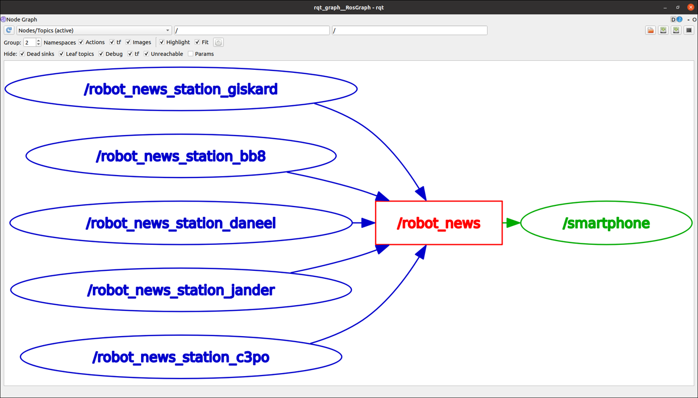
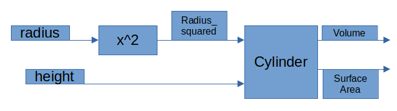

-p at startup.ros2 param, and save them to a YAML file.declare_parameter("name", default)--ros-args -p name:=valueros2 param dump · --params-fileNode(package, executable, name, remappings, parameters)ros2 launch my_robot_bringup app.launch.py| Time | Activity | Type |
|---|---|---|
| 0:00–0:10 | Warm-up + battery/LED demo from a student | Check |
| 0:10–0:25 | Parameters (knobs) and launch files (start button) | Teach |
| 0:25–1:05 | Labs 1–2 — parameters in number_publisher + robot_news_station, param CLI, YAML | Do |
| 1:05–1:15 | Break | |
| 1:15–2:00 | Labs 3–4 — bringup package, number_app.launch.py, then rename/remap/params | Do |
| 2:00–2:45 | Activity 6.1 — radio.launch.py (5 stations + smartphone) | Do |
| 2:45–3:00 | Exit ticket; set the cylinder mini-project as homework | Check |
Teaching tip. Before Lab 3, remind students how many terminals they opened for the battery/LED system. Then show one ros2 launch starting everything. The motivation sells itself. Link to the LIMO: limo_gazebo_diff.launch.py from Lecture 1 is just a bigger version of what they write today.
In number_publisher, the number (2) and the rate (0.5 s) are written in the code. What must you do today to change them?
-p number_to_publish:=5.How many terminals did the battery + LED panel system need?
Parameters are the knobs on a machine. A washing machine has one program (the code) but knobs for temperature and speed. You set them before you start, without opening the machine.
In ROS 2, a parameter belongs to one node and has a name and a type.
A launch file is the start button of the whole factory. It says which nodes to start, what to call them, how to wire their topics and which knob settings to use.
In ROS 2, launch files are written in Python.



2 int, 2.0 float.ros2 run.[("old", "new")] in a launch file.ros2 run my_py_pkg number_publisher
ros2 param list/number_publisher: use_sim_time
use_sim_time is on every node. You'll meet it again with Gazebo in Lecture 8.
Change the __init__ of number_publisher.py (the highlighted lines are new):
class NumberPublisherNode(Node):
def __init__(self):
super().__init__("number_publisher")
self.declare_parameter("number_to_publish", 2) # name, default value
self.declare_parameter("publish_frequency", 1.0)
self.number_ = self.get_parameter("number_to_publish").value
self.publish_frequency_ = self.get_parameter("publish_frequency").value
self.number_publisher_ = self.create_publisher(Int64, "number", 10)
self.number_timer_ = self.create_timer(1.0 / self.publish_frequency_, self.publish_number)
self.get_logger().info("Number publisher has been started")Some older tutorials write declare_parameter("test123") without a default. On ROS 2 Humble this creates a parameter with no type, which causes confusing errors. Always write declare_parameter("name", default). The default also fixes the type: 2 is an integer, 1.0 is a float.
-pros2 run my_py_pkg number_publisher --ros-args -p number_to_publish:=5 -p publish_frequency:=4.0ros2 param get /number_publisher number_to_publish
ros2 topic echo /number
ros2 topic hz /numberInteger value is: 5 data: 5 --- average rate: 4.000
Same code, different behaviour, and no rebuild needed. Try -p number_to_publish:=hello and read the error. The type was fixed by the default value.
In robot_news_station.py, replace the fixed name with a parameter:
self.declare_parameter("robot_name", "LIMO")
self.robot_name_ = self.get_parameter("robot_name").valueros2 run my_py_pkg robot_news_station --ros-args -p robot_name:=R2D2
ros2 run my_py_pkg robot_news_station --ros-args -r __node:=station_b -p robot_name:=C3PO
ros2 topic echo /robot_newsYou'll see messages from both R2D2 and C3PO: one program, two robots.
ros2 param list /turtlesim
ros2 param set /turtlesim background_r 150
ros2 param set /turtlesim background_g 0The turtlesim background changes colour. turtlesim listens for parameter changes. Our number_publisher reads its parameters only once, in __init__, so ros2 param set on it changes the value but not the behaviour. That's normal for most nodes.
mkdir -p ~/ros2_ws/params
ros2 param dump /turtlesim > ~/ros2_ws/params/turtlesim.yaml
cat ~/ros2_ws/params/turtlesim.yaml
# stop turtlesim, then start it with the saved settings:
ros2 run turtlesim turtlesim_node --ros-args --params-file ~/ros2_ws/params/turtlesim.yamlBig robot software (SLAM, Nav2) has hundreds of parameters, and they are always stored in YAML files like this one. In Lecture 12 you will load Nav2's YAML file.
By convention, launch files live in a package called <robot>_bringup.
cd ~/ros2_ws/src
ros2 pkg create my_robot_bringup
cd my_robot_bringup
rm -rf include/ src/
mkdir launchcmake_minimum_required(VERSION 3.8)
project(my_robot_bringup)
find_package(ament_cmake REQUIRED)
install(DIRECTORY
launch
DESTINATION share/${PROJECT_NAME}
)
ament_package() <exec_depend>my_py_pkg</exec_depend>from launch import LaunchDescription
from launch_ros.actions import Node
def generate_launch_description():
ld = LaunchDescription()
number_publisher_node = Node(
package="my_py_pkg",
executable="number_publisher",
)
number_counter_node = Node(
package="my_py_pkg",
executable="number_counter",
)
ld.add_action(number_publisher_node)
ld.add_action(number_counter_node)
return ldEvery launch file has a function generate_launch_description() that returns a list of things to start. Each Node(...) is exactly one ros2 run.
cd ~/ros2_ws
colcon build --packages-select my_robot_bringup --symlink-install
source ~/.bashrc
ros2 launch my_robot_bringup number_app.launch.pyros2 node list
ros2 topic echo /number_countOne command, two nodes. Ctrl+C in Terminal 1 stops all of them.
--ros-args, now in Pythonfrom launch import LaunchDescription
from launch_ros.actions import Node
def generate_launch_description():
ld = LaunchDescription()
remap_number_topic = ("number", "my_number")
number_publisher_node = Node(
package="my_py_pkg",
executable="number_publisher",
name="my_number_publisher", # rename the node
remappings=[remap_number_topic], # remap topics/services
parameters=[{"number_to_publish": 4, # set parameters
"publish_frequency": 5.0}],
)
number_counter_node = Node(
package="my_py_pkg",
executable="number_counter",
name="my_number_counter",
remappings=[remap_number_topic,
("number_count", "my_number_count")],
)
ld.add_action(number_publisher_node)
ld.add_action(number_counter_node)
return ld| In the terminal | In a launch file |
|---|---|
-r __node:=my_number_publisher | name="my_number_publisher" |
-r number:=my_number | remappings=[("number", "my_number")] |
-p number_to_publish:=4 | parameters=[{"number_to_publish": 4}] |
--params-file file.yaml | parameters=["/path/file.yaml"] |
With --symlink-install, editing an existing launch file needs no rebuild.
ros2 launch my_robot_bringup number_app.launch.py
ros2 node list
ros2 topic list
ros2 topic hz /my_number_count/my_number_counter /my_number_publisher ... /my_number /my_number_count ... average rate: 5.000

Write radio.launch.py that starts 5 robot_news_station nodes and 1 smartphone. Robot names: Giskard, BB8, Daneel, Jander, C3PO. Each station has a different node name and publishes "Hi, this is <name> …". The smartphone receives all of them. You don't need to change any node, only write one launch file.
for loop over the names and ld.add_action(...) each Node. New launch file means you must rebuild once.from launch import LaunchDescription
from launch_ros.actions import Node
def generate_launch_description():
ld = LaunchDescription()
robot_names = ["Giskard", "BB8", "Daneel", "Jander", "C3PO"]
for name in robot_names:
ld.add_action(Node(
package="my_py_pkg",
executable="robot_news_station",
name="robot_news_station_" + name.lower(),
parameters=[{"robot_name": name}],
))
ld.add_action(Node(package="my_py_pkg", executable="smartphone"))
return ldcd ~/ros2_ws && colcon build --packages-select my_robot_bringup --symlink-install && source ~/.bashrc
ros2 launch my_robot_bringup radio.launch.py
rqt_graph # second terminal: compare with the diagram aboveMake led_states a parameter of led_panel.py with default [0, 0, 0], then run ros2 run my_py_pkg led_panel --ros-args -p led_states:="[0,1,0,1,1]".
self.declare_parameter("led_states", [0, 0, 0])
self.led_states_ = list(self.get_parameter("led_states").value)
Build a 3-node system that calculates the volume and surface area of a cylinder:
Volume = π · r² · h Surface area = 2 · π · r · (r + h)
cylinder_input: asks the user for r and h (Python input()), then publishes them as std_msgs/msg/Float64 on /radius and /height every 0.1 s.radius_squarer: subscribes to /radius and publishes r² on /radius_squared.cylinder_calc: subscribes to all three topics. When it has all three values, it publishes a custom my_robot_interfaces/msg/Cylinder (float64 volume, float64 surface_area) on /cylinder.cylinder.launch.py that starts radius_squarer and cylinder_calc. Run cylinder_input in its own terminal, because it needs the keyboard.#!/usr/bin/env python3
from math import pi
import rclpy
from rclpy.node import Node
from std_msgs.msg import Float64
from my_robot_interfaces.msg import Cylinder
class CylinderCalcNode(Node):
def __init__(self):
super().__init__("cylinder_calc")
self.radius_ = None
self.radius_squared_ = None
self.height_ = None
self.create_subscription(Float64, "radius", self.callback_radius, 10)
self.create_subscription(Float64, "radius_squared", self.callback_radius_squared, 10)
self.create_subscription(Float64, "height", self.callback_height, 10)
self.cylinder_pub_ = self.create_publisher(Cylinder, "cylinder", 10)
def callback_radius(self, msg):
self.radius_ = msg.data
self.calculate()
def callback_radius_squared(self, msg):
self.radius_squared_ = msg.data
self.calculate()
def callback_height(self, msg):
self.height_ = msg.data
self.calculate()
def calculate(self):
if None in (self.radius_, self.radius_squared_, self.height_):
return # wait until we have all three
msg = Cylinder()
msg.volume = pi * self.radius_squared_ * self.height_
msg.surface_area = 2 * pi * (self.radius_ * self.height_ + self.radius_squared_)
self.cylinder_pub_.publish(msg)
def main(args=None):
rclpy.init(args=args)
rclpy.spin(CylinderCalcNode())
rclpy.shutdown()
if __name__ == "__main__":
main()Remember: add "msg/Cylinder.msg" to the interfaces CMakeLists, add <depend>std_msgs</depend> to my_py_pkg/package.xml, and register three executables. Check: with r = 2 and h = 5 you should get volume ≈ 62.83 and surface area ≈ 87.96.
parameters=[path]).declare_parameter("rate", 1), then you run with -p rate:=2.5. What happens?
1.0 as the default if you want a float.Which command saves all parameters of a running node?
--params-file can load again.In a launch file, how do you rename a node?
name= is the launch-file version of -r __node:=.Where must launch files be installed for ros2 launch to find them?
You ran ros2 param set on number_publisher but nothing changed. Why?
| You see… | Why | Fix |
|---|---|---|
| InvalidParameterTypeException | You passed a value of a different type than the default (e.g. 5 for a float). | Match the type: publish_frequency:=5.0. |
| ParameterNotDeclaredException | get_parameter before declare_parameter, or a typo in the name. | Declare first; copy-paste the name. |
| file 'x.launch.py' was not found in the share directory | The launch folder is not installed, or the package wasn't rebuilt after adding the file. | Check install(DIRECTORY launch …); rebuild; source. |
| executable 'X' not found on the libexec directory | A typo in executable=, or it's not in setup.py. | It must match the name in console_scripts exactly. |
| Nodes start but don't talk | A remap on one node only. | Use rqt_graph; remap every node that uses the topic. |
What decides the type of a parameter?
declare_parameter (2 → integer, 2.0 → float, "a" → string).Write the Node(...) for robot_news_station named station_x with robot_name = "X".
Node(package="my_py_pkg", executable="robot_news_station", name="station_x", parameters=[{"robot_name": "X"}])How do you save all parameters of a running node to a file?
ros2 param dump /node_name > file.yamlWhich Lecture 1 command was a launch file?
ros2 launch limo_gazebosim limo_gazebo_diff.launch.py. It starts Gazebo, the robot model publisher, the spawner and the watchdog.declare_parameter("n", default) · get_parameter("n").valuein Python--ros-args -p name:=valueset at startupros2 param list / get / setinspect & changeros2 param dump /node > f.yaml · --params-file f.yamlsave & loadros2 launch PKG FILE.launch.pystart an applicationNode(package, executable, name, remappings, parameters)the launch building blockTurtle.msg and TurtleArray.msg (Lecture 5 homework) are built.